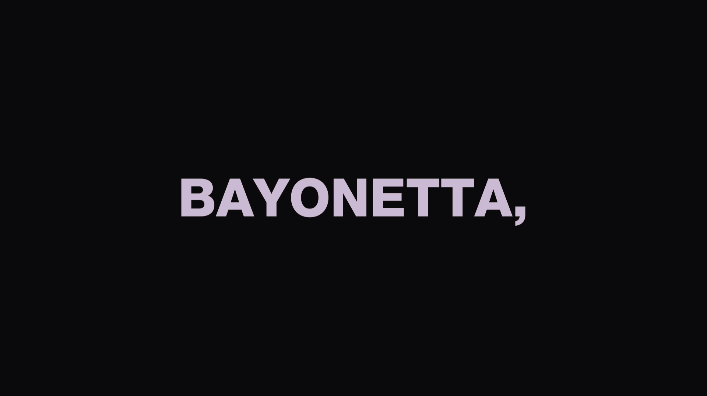

Week Five
Summary
This week we began the process of working on the first project of the semester, Decoding Cultures of Time-based Media. My process begins with submitting a proposal of my initial idea to the project. Using mockups, and sources online for inspiration, with the linked visual elements and interaction dynamics of my aesthetics choice, which was Bayonetta.
I decided to look more into the idea of fast reading tests and it relationship with the way we think of time moving on at the same time as we get into some sort of fast reading challenge.
This video for example by WizardReader, visualizes the average reading speed differences between a reader from paper, or from a computer screen, and mixing the different possibilities by changing the speed of the words changing on the screen, challenging the user to read them in levels that is above the supposed average.
I can see this as a way of making some interactive challenges on the computer device, but also how we don't realize the amount of time that passes by when being put in that challenge. It could be looked at as reading a book that you like, and going on with the chapters without focusing on the time when you're enjoying it. And mostly end up a bit shocked by the amount of time that passed by after finishing the reading session, however it passed by.

In this GIF simulating the tone of the chorus in the themesong of Bayonetta, Mysterious Destiny, with each word staying on screen in sync with the actual song itself linked above it. What I had in mind for the project could some sort speed reading interactive interface.
The text in context to be read could be some sort of dialogue or songs lyrics from Bayonetta, and the user infront of the laptop in this case, would lean forward, and as the camera is coded to detect its distance -using an Ultrasonic sensor perhaps- it speeds up the text changing on the screen for the reader to try and catch; and so it rises the challenge of how many words per minute will the user read in that case.
Another way I though of to interact with the text's speed was by using the cursor, and setting specific areas on the interface where hovering the mouse over would increase the speed, and hovering away from them would decrease the speed. But that felt like it would be distracting for the user who's adjusting the speed as they are trying to read and get through the speed test.
A visual element I though would be interesting and fitting for this challenge could be some blurred effects and changes in brightness on the text as gets faster, which I visualized above.
To me, I believe that the real moment where the time passing by is realized, is exactly right after being done with this interactive challeng idea. Taking the interactivity to beyond the interface itself, when the user realizes the speed of reading they were going at, and the time that passed by going through these speed levels.
Return to home page